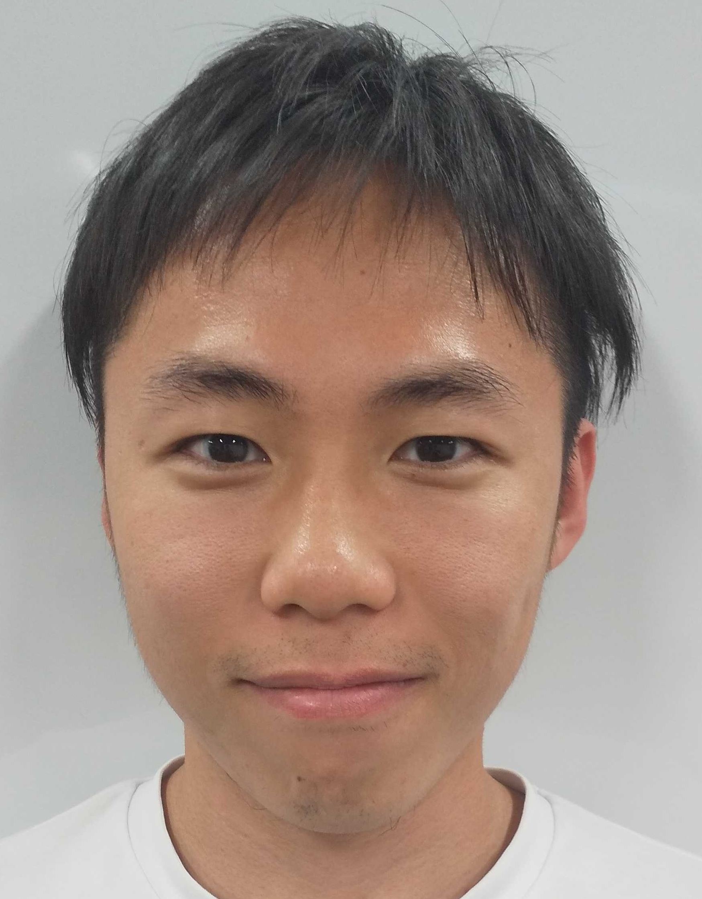

About me
- 
-
Toyota Technological Institute (Japan) の博士学生です． 現在は 知能情報メディア研究室 に所属し， 浮田宗伯教授 の下で研究をしています．
研究領域はコンピュータビジョン・深層学習です．特に，複数個体が複雑に絡み合う集団行動の解析に興味があります．
主な研究として joint attention estimation (ICCV2023), individual and group activity recognition (MVA2023, MVA2021), gaze estimation (MVA2023) が挙げられます．
Educational experience
- 2018: 愛知県立旭丘高等学校 卒業
- 2021: 豊田工業大学 工学部先端工学基礎学科 中退（大学院への飛び入学のため）
- 2023: 豊田工業大学 大学院修士課程 先端工学専攻 修了（首席）
Selected publications
- Chihiro Nakatani, Hiroaki Kawashima, Norimichi Ukita Learning Group Activity Features Through Person Attribute Prediction
Proc. of IEEE Conference on Computer Vision & Pattern Recognition (CVPR2024), June, 2024. (acceptance rate = xx.xx%)
- Chihiro Nakatani, Hiroaki Kawashima, Norimichi Ukita Interaction-aware Joint Attention Estimation Using People Attributes
Proc. of IEEE International Conference on Computer Vision (ICCV2023), Oct., 2023. (acceptance rate = 26.15%)
- Chihiro Nakatani, Hiroaki Kawashima, Norimichi Ukita Joint Learning with Group Relation and Individual Action
Proc. of the 18th International Conference on Machine Vision Applications (MVA2023), July, 2023. (oral acceptance rate = 16.5%)
- Daiki Mushiake, Kentaro Otomo, Chihiro Nakatani, Norimichi Ukita Shape Preservation in Image Style Transfer for Gaze Estimation
Proc. of the 18th International Conference on Machine Vision Applications (MVA2023), July, 2023. (oral acceptance rate = 16.5%)
- Chihiro Nakatani, Kohei Sendo, Norimichi Ukita Group Activity Recognition Using Joint Learning of Individual Action Recognition and People Grouping
Proc. of the 17th International Conference on Machine Vision Applications (MVA2021), July, 2021. (oral acceptance rate = 18.9%)
その他の業績については google scholor をご覧ください．
Projessional activities
- Reviewer: CVPR2024
Internships
- OptFit Corporation (Aichi Japan; 2020)
ジム管理に関連したwebサービスの開発
- Activate Data Corporation (Aichi Japan; 2019)
深層学習を用いた画像認識モデルの学習
Awards
-
立石科学技術振興財団国際交流助成. (2023年度，acceptance rate = 47.6%)
-
豊秋奨学会奨学生. (2023年度-2025年度)
-
SICE優秀学生賞. (3月. 2023年)
-
豊田奨学基金給付奨学生. (2018年度-2021年度)